This calculus is based on interaction nets. Each node has a polarity (positive or negative). Interactions only occur between one positive node and one negative node at their principal ports.
| Wildcard | Resolves to |
|---|---|
* | OPX, OPY, or APP |
op | OPX or OPY |
| empty triangle | APP, OPX, OPY, or DUP |
| Node | Polarity | Aux port 1 | Aux port 2 |
|---|---|---|---|
| LAM | positive | negative | positive |
| APP | negative | positive | negative |
| SUP | positive | positive | positive |
| DUP | negative | negative | negative |
| LAZ | positive | negative | positive |
| OPX | negative | positive | negative |
| OPY | negative | positive | negative |
| NUL | positive | — | — |
| ERA | negative | — | — |
| # | positive | — | — |
Each rule is a subgraph with cases (numeric subscripts). Within a subgraph, cases are independent configurations — the subscripts are arbitrary labels with no implied ordering.
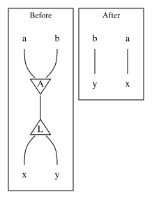
a, b. LAM aux ports carry x, y.a → x, b → y passthrough.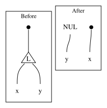
x, y.x, NUL → y.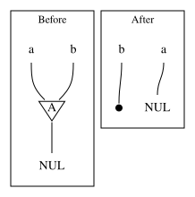
a, b.a → NUL, b → ERA.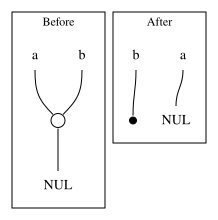
a, b.a → NUL, b → ERA.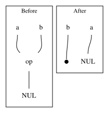
op wildcard principal connects to NUL. op aux ports carry a, b.a → NUL, b → ERA.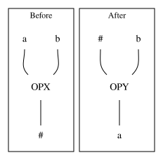
#. OPX aux ports carry a, b.# connects to OPY. OPY aux ports carry #, b. OPY principal connects to a.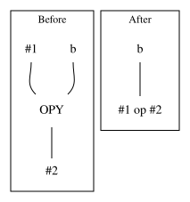
#2. OPY aux ports carry #1, b.b connects to result #1 op #2.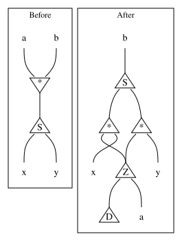
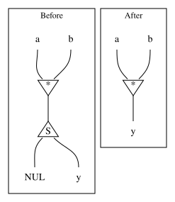
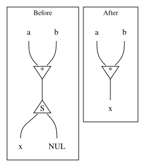
* wildcard principal connects to SUP principal. * aux ports carry a, b. SUP aux ports carry x, y.b. SUP aux ports connect to two * wildcards. Each * aux port connects to LAZ principal. LAZ aux ports connect to DUP and a/b. * other aux ports connect to x/y.* principal connects directly to y.* principal connects directly to x.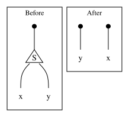
x, y.x and y.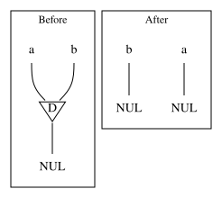
a, b.a → NUL, b → NUL.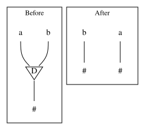
#. DUP aux ports carry a, b.a → #, b → #.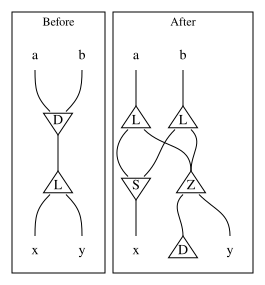
a, b. LAM aux ports carry x, y.a, b each connect to a LAM. LAM aux ports connect to SUP. SUP principal connects to x. LAZ aux ports connect to DUP and y.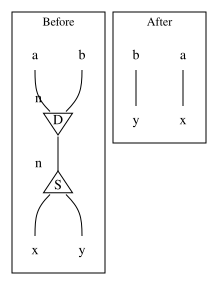
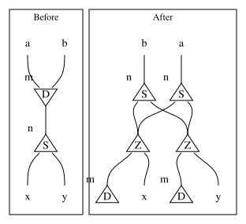
D_n principal connects to S_n principal. DUP aux ports carry a, b. SUP aux ports carry x, y.D_m principal connects to S_n principal. DUP aux ports carry a, b. SUP aux ports carry x, y.a, b each connect to an S_n. Each S_n aux ports connect to LAZ and DUP chains routing to x, y.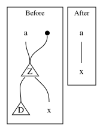
a connects to LAZ principal. LAZ aux ports connect to D and x.a, b connect to empty triangle aux ports. c connects to LAZ principal. LAZ aux ports connect to D and x.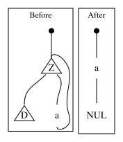
a connects to LAZ principal. LAZ aux ports connect to D and a (looping back).a. a connects to NUL.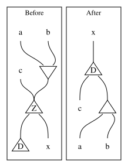
a, b connect to empty triangle aux ports. c connects to LAZ principal. LAZ aux ports connect to D and x.x connects to DUP principal. DUP aux ports connect to c and empty triangle principal. Empty triangle aux ports connect to a, b.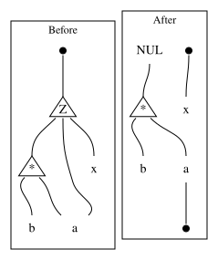
* wildcard and x. * aux ports carry a, b with a loop back to LAZ principal.x and ERA. NUL connects to * wildcard principal. * aux ports carry a, b. a connects to ERA.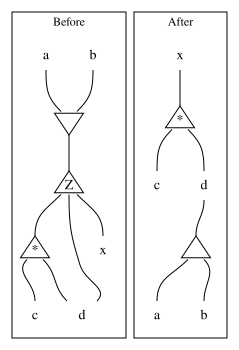
* wildcard and x. * aux ports carry c, d with d looping back to LAZ principal.x connects to * wildcard principal. * aux ports carry c, d. Empty triangle principal connects to d. Empty triangle aux ports carry a, b.